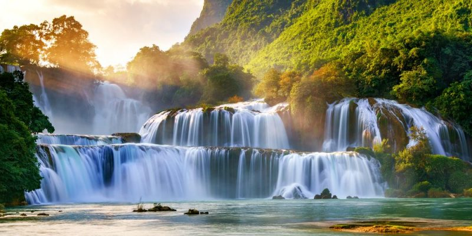

Bases legales
En los diferentes países en el planeta, existen leyes que se relacionan con este vital lìquido. La constitución de la República Bolivariana de Venezuela habla sobre un artículo que dice:
Art 304: "Todas las aguas son bienes de dominio público de la nación, insustituibles para la vida y el desarrollo. La ley establecerá las disposiciones necesarias a fin de garantizar su protección, aprovechamiento y recuperación, respetando las fases del ciclo hidrológico y los criterios de ordenación del territorio".
Y también leyes vigentes de agua tales como:
Art 5: "Los principios que rigen la gestión integral de las aguas se enmarcan en el reconocimiento y ratificación de la soberanía plena que ejerce la Republica sobre las aguas y son:
1. El acceso al agua es un derecho humano fundamental.
2. El agua es insustituible para la vida, el bienestar humano, el desarrollo social y económico, constituyendo un recurso fundamental para la erradicación de la pobreza y debe ser manejada respetando la unidad del ciclo hidrológico.
3. El agua es un bien social. El Estado garantizara el acceso al agua a todas las comunidades urbanas, rurales e indígenas, según sus requerimientos.
4. La gestión integral del agua tiene como unidad territorial básica la cuenca hidrográfica.
5. La gestión integral del agua debe efectuarse en forma participativa.
6. El uso y aprovechamiento de las aguas debe ser eficiente, equitativo, óptimo y sostenible.
7. Los usuarios y usuarias de las aguas contribuirán solidariamente con la conservación de la cuenca, para garantizar en el tiempo la cantidad y calidad de las aguas.
8. Es una obligación fundamental del Estado, con la activa participación de la sociedad, garantizar la conservación de las fuentes de aguas, tanto superficiales como subterráneas.
9. En garantía de la soberanía y la seguridad nacional no podrá otorgarse el aprovechamiento del agua en ningún momento ni lugar, en cualquiera de sus fuentes, a empresas extranjeras que no tengan domicilio legal en el país.
10. Las aguas por ser bienes del dominio público no podrán formar parte del dominio privado de ninguna persona natural o jurídica.
11. La conservación del agua, en cualquiera de sus fuentes y estados físicos, prevalecerá sobre cualquier otro interés de carácter económico o social.
12. Las aguas, por ser parte del patrimonio natural y soberanía de los pueblos, representan un instrumento para la paz entre las naciones. ’’
Art 11: Para asegurar la protección, uso y recuperación de las aguas, los organismos competentes de su administración y los usuarios y usuarias deberán ajustarse a los siguientes criterios:
1. La realización de extracciones ajustadas al balance de disponibilidades y demandas de la fuente correspondiente.
2. El uso eficiente del recurso.
3. La reutilización de aguas residuales
4. La conservación de las cuencas hidrográficas.
5. El manejo integral de las fuentes de aguas superficiales y subterráneas.
6. Cualesquiera otras que los organismos competentes determinen en la normativa aplicable.
La reglamentación de esta ley establecerá los criterios y procedimientos para la elaboración del balance disponibilidad-demanda de las fuentes de aguas superficiales y subterráneas’’.
